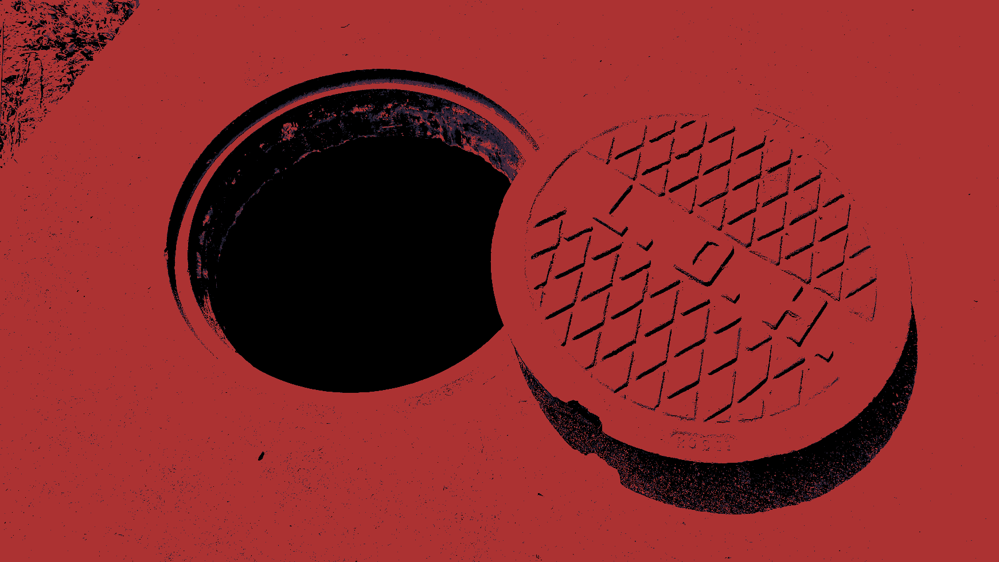
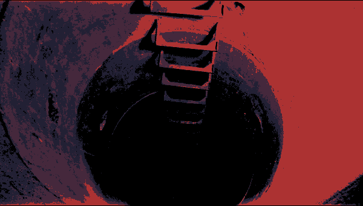
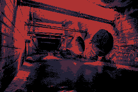

You are a maintainence worker. Your boss has sent you down to investagte a blockage in the lwoer tunnels that's causing problems
for the city. The pay is suspiously high but money is money and so you agree. You go to the worksite and put on your gear.

You go up to the open manhole and look down inside. A ladder disappears into the darkness as the sunlight doesn't reach very far. You lean away as the smell reaches your nose.

You descend into the manhole leaving the fresh air for the stuffy damp dark discomfort of the narrow space leading down. The light from above barely eluminating your surrondings.
You eventually reach the bottom and find yourself in a dimly lit tunnel ankle deep in cold water. The smell is bad, but your used to it. The distant sound of dripping water and the skittering of small critters can be heard.

You walk further into the tunnel and come to a well lit open area with three seperate paths.
You decide to leave and go home. Whatever is down there can stay there for the time being. You might get fired for not doing your job, but it's not your problem now.
There are two pipes, but ony one of them has an open grate just berly enough for you to squeeze through. Suddenly, you hear a faint call for help coming from deep within the pipe.